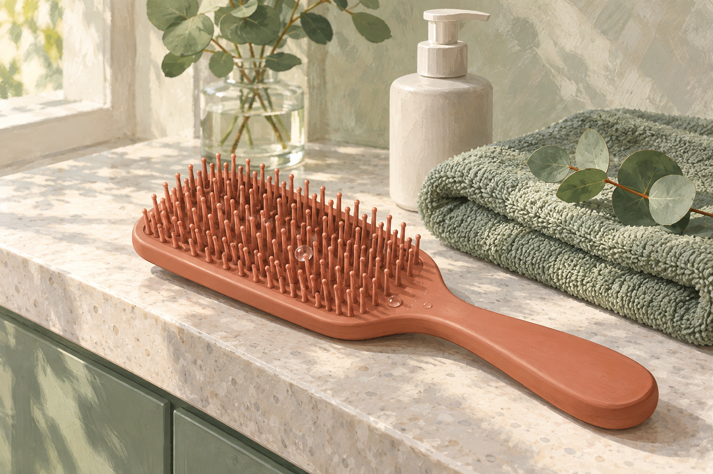
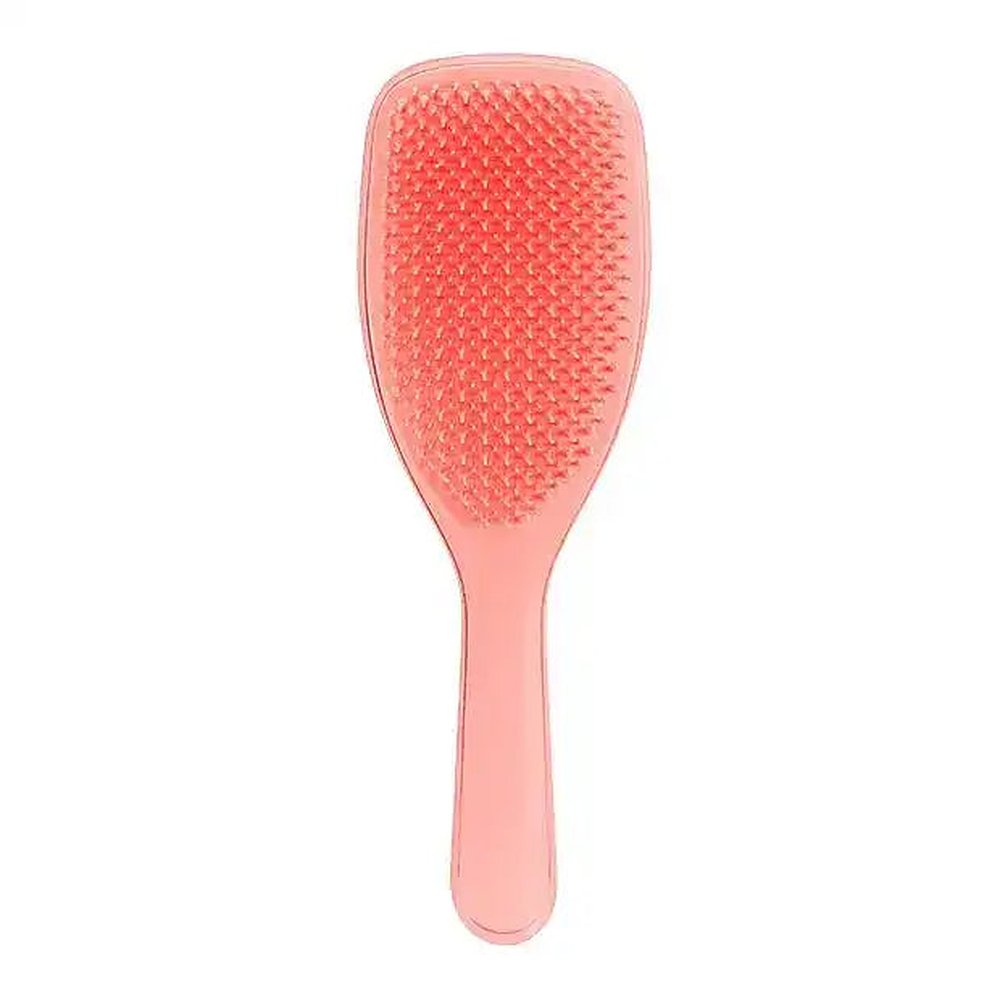

EMPATHY
こんな「濡れた髪のとかし方」、心当たりありませんか。
- お風呂上がり、濡れた髪を根元から一気にとかしている
- 引っかかったら、そのまま力を入れて通してしまう
- ブラシにいつも何本か髪が残っている
- 今のブラシをいつ買ったか、正直思い出せない
- トリートメントは何本も試したのに、ブラシは替えたことがない
- タオルで擦らないようには気をつけている
- 1日に何回とかしているか、数えたことがない
一つでも頷いたなら、あと3分だけ読み進めてほしいんです。
私はこのシリーズで、14回かけてアイテムを揃えてきました。合計¥70,538。前回はカラーをした日のことまで手が届いて、「いつもの日」以外の話もできました。
そのあと、14本を「何をするための道具か」、つまり動詞で並べ直してみたんです。
塗る・つける9本(洗い流さないトリートメント、バーム、ヘアマスク、香水オイル、スカルプエッセンス、プレトリートメント、トリートメント、うねり用の乳液、カラー後のスプレー)。洗う1本(シャンプー)。もみほぐす1本(スカルプブラシ)。乾かす1本(ドライヤー)。拭く1本(タオル)。被る1本(ナイトキャップ)。
「とかす」が、14回いちども出てきません。ブラシなら第7弾で紹介しています。でもあれは頭皮をもみほぐすための道具で、絡まった髪をほどくためのものではありませんでした。

IF NOTHING CHANGES
正直に言うと、いちばん引っかかったのはブラシの古さじゃありません。
「濡れているときがいちばん無防備」と2回書いた私が、その時間に何をしていたか、です。
第10弾のドライヤーの回と、第11弾のタオルの回。私は2回続けて「髪は濡れているときがいちばん無防備だとよく言われる」と書いています。第11弾では、タオルでゴシゴシ擦るのをやめました。挟んで押さえるだけにしました。
それで、そのあと何をしていたか。同じ濡れた髪を、昔からある普通のブラシで、根元から一気にとかしていました。引っかかったら、そのまま力で通す。ブラシにはいつも何本か髪が残っていました。
つまりタオルで擦らないようにした数分後に、同じ髪を引っ張っていたわけです。
ここが厄介なところで、とかすのは一瞬なんです。数秒で終わるので、ヘアケアのうちに数えていない。でも数えてみると、タオルのあと、乾かしながら、朝、出かける前。私は1日に少なくとも4回とかしていました。1年なら1,460回です。
第12弾では、時間でいちばん長く髪に触れているのは枕だと書きました。回数でいちばん多く触れているのは、たぶんブラシです。なのに私のブラシは、何年前に買ったか思い出せないものでした。
半年後も、たぶん同じです。棚には16本目、17本目の新しいアイテムが増えていて、それでも毎晩、タオルのあとの数十秒だけは、昔と同じ手つきで引っ張っている。
いちばんもったいないのは、ここです。第1〜14弾で、髪に何をするかは14通り出そろっているんです。出ていないのは、いちばん回数が多い動詞のほうだけ。
──ただ、先に言っておきます。ブラシで傷みは治りません。減らせるかもしれないのは、とかすときに引っ張る負担だけです。その線引きは後半で正直に書きます。
THE TURN
そこでたどり着いたのが、「タングルティーザー ザ・ウェットディタングラーPro」でした。
ここで一つ、はっきりさせておきたいことがあります。第1〜14弾で紹介してきたものは、14本とも「とかす」以外の動詞の道具でした。
これは欠点ではありません。塗る、洗う、乾かす、拭く。どれもケアの土台です。14本とも、その役割を果たしてくれました。
一方で今回のものは、メーカーが「濡れ髪専用」と言い切っているブラシです。乾いた髪を整えるためでも、乾かしながら形を作るためでもない。タオルのあと、ドライヤーの前。いちばん無防備な時間だけに絞った道具です。
言ってしまえば、第1〜14弾が"髪に何をするか"の14通り。そしてこの1本が、14回いちども出てこなかった15個目の動詞です。
私がこの1本を選んだ理由は、大きく3つ。
14本を動詞で並べて、唯一空いていた「とかす」
塗る9本、洗う・もみほぐす・乾かす・拭く・被るが1本ずつ。1日でいちばん回数が多い動作だけが、14回とも抜けていました。
「濡れているとき」に絞っている
第10弾・第11弾で2回書いた「濡れているときがいちばん無防備」の続きになります。タオル(第11弾)でほどく前を見直したなら、次はほどく道具そのものです。
ブラシは2本目。でも髪に向けたのは初めて
第7弾のスカルプブラシは、頭皮をもみほぐすための道具でした。絡まった髪をほどくためのブラシは、シリーズで初めてです。
「何をするか」から、「いちばん何回しているか」へ。14回かけて髪にすることを揃えてきたからこそ、数えていなかった1つに目が向きました。
※濡れた髪の解きほぐしや髪への負担の軽減に関する記載はメーカーの公表内容に基づくものであり、効果を保証するものではありません。感じ方には個人差があります。
THE PRODUCT
タングルティーザー ザ・ウェットディタングラーProとは
タングルティーザーは、絡まった髪をほどくブラシで知られるイギリス発のブランドです。その中の「ザ・ウェットディタングラー」が濡れた髪用のモデルで、今回のProはサロンワーク向けの大きめサイズとして出ています。
ブランドとしてはシリーズ初登場です。第1〜14弾で登場したオラプレックス、ケラスターゼ、リンク、LOA、資生堂プロフェッショナル、SINN PURETE、ルベル、クレイツ、ハホニコ、KINUJO、ウエラとは重なりません。

- タイプ
- 濡れ髪専用のヘアブラシ(メーカー表記)
- サイズ
- ブラシ面がスタンダードサイズより20%大きい、大きめサイズ
- 価格
- ¥2,495(税込/リビングコーラル・ブラックグロス)、カプリブルーのみ¥2,895。希望小売価格¥2,750(カプリブルー¥3,190)から割引適用中(2026年10月7日時点)
- 色
- リビングコーラル / ブラックグロス / カプリブルー
- 構造
- 日本・UK・EUで特許を取得している「長短二段構造」のブラシ(メーカー表記)
- 考え方
- 濡れた髪の間をするりと通り、無理な力をかけずに毛先までやさしく解きほぐす。引っ張らずにブラッシングでき、髪への負担を軽減する、とされています
- キューティクル
- 濡れてダメージを受けやすくなったキューティクルも整えながらブラッシングできる、とのこと
- 持ち手
- 大きく、人間工学に基づいた設計。濡れた手でも滑りにくい、とメーカーは説明しています
- 使い方
- タオルドライ後の濡れた髪に。シャンプー後のトリートメントを根元から毛先まで均一に塗布する使い方もできる、とのこと
- 向いている相手
- 髪の量が多い方やロングヘアの方が自分でとかす際にもおすすめ、とメーカーは説明しています
- ブランド
- タングルティーザー・シリーズ初登場
この1本のいちばんの特徴は、工程が1つも増えないという点です。これまでの回は、何かを1本足すたびに手順が1つ増えていました。今回は、今使っているブラシと入れ替えるだけ。第11弾のタオルで押さえて、このブラシでほどいて、第1弾のNo.6を塗って、第10弾のドライヤーで乾かす。順番はこれまでと同じです。
そして、選ぶときに私が見たのは「特許」という言葉の響きではありませんでした。商品ページに、ピンを真横から写した写真が載っていることです。長いピンと短いピンが交互に並んでいるのが、はっきり分かる。「二段構造」が言葉だけでなく、目で確かめられる。
スタンダードサイズと並べた比較の図もあって、「20%大きい」もだいたいの見当がつきます。効果のほうは私には測りようがないので、こういう見て確かめられる仕様があると信用しやすいです。
※上記の構造・仕上がり・負担の軽減に関する記載はすべてメーカーの公表内容に基づくものです。効果を保証するものではなく、感じ方には個人差があります。
WHY IT WORKS
「で、結局ブラシを替えると何が変わるの?」に、飾らず正直に答えます。
14回かけて「何をするか」を揃えてきたからこそ、15回目でようやく「何回しているか」に目が向きました。これは、14本ぶん遠回りしたからこそ出てきた、私のいちばん正直な実感です。
※上記は仕様と使い勝手に関する説明です。効果には個人差があり、特定の結果を保証するものではありません。
WHY TRUST IT
正直に言うと、私は「髪にやさしい」と書いてあるだけでは商品を信じないタイプです。
それでもこの1本を紹介したいと思えたのは、こんな背景があるからです。
効果ではなく、回数とタイミングで選べる
引っ張る負担がどれだけ減るかは、私には測りようがありません。だから主な判断材料にしていません。私が納得したのは「1日でいちばん回数が多い」「いちばん無防備なときに使う」という、自分で数えられる前提のほうです。
構造を、写真で確かめられる
ピンを真横から写した写真で、長いピンと短いピンが交互に並んでいるのが見えます。スタンダードサイズとの比較図もある。「特許」「二段構造」が言葉だけで終わっていないページです。
「治す」ではなく「負担を軽減」と書いている
メーカーの説明は「髪への負担を軽減」です。傷みが治るとは書いていない。書ける範囲を超えていない説明は、それ自体が信用材料になると思っています。
「濡れ髪専用」と、用途を絞っている
何にでも使える、とは書いていません。乾いた髪にも、ブローにも、とは言わずに「濡れ髪専用」。使う場面を自分で限定している説明は、読む側としては判断しやすいです。
¥2,495はシリーズで3番目に安い
第1弾¥3,740、第2弾¥4,180、第3弾¥4,290、第4弾¥7,260、第5弾¥8,800、第6弾¥5,776、第7弾¥2,200、第8弾¥3,740、第9弾¥2,950、第10弾¥9,350、第11弾¥894、第12弾¥9,350、第13弾¥3,410、第14弾¥4,598。合計¥70,538、平均¥5,038。今回はその半分以下です。
美容室の公式通販で、正規品として扱われている
ALBUM ONLINE STOREは美容室ALBUMの公式通販で、商品ページにも【正規品】と書かれています。今回は化粧品ではなく道具ですが、私は毎回ここを確認してから紹介しています。
WHAT PEOPLE NOTICE
こんな使用感(声の傾向)
髪の長さも量も、絡まりやすさも人それぞれです。だからこそ、盛らずに、分かったことだけを整理してみます。
引っかかりについて
いちばん違いを感じたのは、とかしている途中で手が止まる回数でした。ただ、それが髪の負担としてどれだけの差なのかは、自分では測れません。そこは断言しません。
大きさについて
手に取って最初に思ったのは「大きい」でした。肩より長いと、一度に取れる量が多くて楽です。ショートだと持て余すかもしれません。持ち歩き用ではないと思います。
お風呂の中で使うことについて
トリートメントをなじませるときに、そのままとかす使い方がメーカーの説明にあります。手で揉み込むより、毛先まで行き渡っている感じはしました。今のトリートメントを替える必要はありません。
持ち手について
濡れた手でも滑りにくい、とメーカーは書いています。浴室で使うなら、ここは地味に大事だと思いました。
手入れについて
ピンの間に髪が残るのは、どのブラシでも同じです。濡れた場所で使うものなので、私は使ったら髪を取って、水気を切ってから置いています。
期待しすぎないほうがいい部分
ここは正直に書きます。ブラシで傷みは治りません。切れ毛や枝毛がなくなるわけでもない。減らせるかもしれないのは、とかすときに引っ張る負担だけです。それと、乾いた髪のスタイリング用でもありません。
もちろん、髪の長さも量も質も人それぞれ。だからこそ、「自分は1日に何回、どうやってとかしているか」で考えてみる価値があると思っています。
※上記は一般的な使用感の傾向および個人の感想であり、効果を保証するものではありません。
FAQ
よくある質問
乾いた髪にも使えますか?
ドライヤーで乾かしながら使えますか?
ショートヘアでも使えますか?
第7弾のスカルプブラシとは何が違いますか?
お風呂の中で使ってもいいですか?
色によって違いはありますか?
今のケアは替えなくていいですか?
使うと切れ毛や枝毛がなくなりますか?
ABOUT THE PRICE
価格の考え方
タングルティーザー ザ・ウェットディタングラーProは ¥2,495(税込)です。カプリブルーだけ¥2,895。2026年10月7日時点で、希望小売価格の¥2,750から割引が入っています。
これまでの14本を並べてみます。¥3,740 / ¥4,180 / ¥4,290 / ¥7,260 / ¥8,800 / ¥5,776 / ¥2,200 / ¥3,740 / ¥2,950 / ¥9,350 / ¥894 / ¥9,350 / ¥3,410 / ¥4,598。合計¥70,538、1本あたりの平均は¥5,038。今回はその半分以下で、シリーズで3番目に安い回です。
そしてもう一度、比率の話をさせてください。私はこのシリーズで、14本・合計¥70,538を「髪に何をするか」に使ってきました。同じ期間、1日でいちばん回数が多い「とかす」のために使った金額は¥0です。──毎回この計算をして毎回笑っているのですが、私はどうやら、毎回どこか1箇所を完全に空白にしたまま買い物をしているらしいんです。
しかも、ブラシは塗るものと違って減りません。1日4回とかすなら、1年で1,460回。使い切って買い直す、ということがない道具です。
買う前に1つだけ確認してください。今のブラシで、濡れた髪をとかすときに引っかかるたびに力を入れているか。引っかからないなら、急いで替える理由はありません。
それともう1つ。ALBUMの送料無料は1注文あたり税込3,980円以上なので、ブラシ1本だとそこに届きません。何か補充するものがあるときに一緒に、が無駄がないと思います。
※価格・在庫・送料条件は変動します。最新情報は必ず商品ページでご確認ください。使用感は髪の長さ・量・髪質によって大きく異なります。
BEFORE YOU GO
安心して試すために
「結局また1本増えるだけでは?」その疑いは、まっとうだと思います。私も14回ぶん、髪にすることを足し続けてきました。
だからこの回も、買う前に無料でできることを先に書いておきます。どれもよく言われることです。
毛先からほどいて、少しずつ上へ進む。一度にたくさんの毛束を取らない。引っかかったら力で通さず、その少し下からほどき直す。トリートメントがついている状態のほうが通りやすい。この4つはお金がかかりません。私はずっと、根元から一気に下ろしていました。
道具を替える前に、まず順番を逆にするだけでも違うと思います。そのうえで、それでも今のブラシが毎回引っかかるなら。そのときに初めて、濡れた髪のための1本を考えてもらえればいいと思っています。
そして、いきなり15個すべてを揃える必要もまったくありません。第1〜14弾で紹介したケアを、まず自分のペースで試す。そのうえで「髪にすることはひと通りやったな」と思えたときに、いちばん回数の多い数十秒を思い出してもらえれば十分です。
髪にすることは14回で揃いました。15回目は、いちばん何回もしていることです。
※本商品は髪の傷みを補修するものではありません。とかし方に関する記載は一般に言われている内容です。
LAST WORD
塗る、洗う、もみほぐす、乾かす、拭く、被る。14回かけて、髪にすることはひと通り出揃ったつもりでした。
でも、1日でいちばん回数が多い「とかす」だけが、一度も出てきていません。
しかもそれは、自分で2回も「いちばん無防備」と書いた、濡れた髪の上でのことでした。
このまま16本目の新しいアイテムを塗り足して、「まだ足りないのかも」と思いながらまた半年過ごすのか。それとも今夜、タオルのあとの数十秒だけ、毛先からほどいてみるのか。
毛先から。少しずつ。引っかかったら下から。ここまではお金がかかりません。今夜から試せます。
追伸
正直に言うと、この1本も「魔法の1本」ではありません。化粧品ですらなく、ただのブラシです。傷みを治すものでも、切れ毛をなくすものでもない。使った翌朝に別人の髪になるわけでもありません。感じ方には個人差があります。
それでも私がこれを紹介したいのは、「時間でいちばん長く髪に触れているのは枕、回数でいちばん多く触れているのはブラシ」を、15回目にしてやっと言葉にできたからです。第11弾では「どう扱っているか」、第12弾では「意志が届かない時間」、第13弾では「直そうとしている問題が違う」、第14弾では「扱いを変えるべき日」と書きました。今回わかったのは、そのどれもが何をするかの話で、何回しているかは一度も数えていなかった、ということでした。
15回に分けて紹介してきましたが、この15個を全部揃える必要はまったくありません。とくに今回は、今のブラシで引っかからないなら急ぐ理由がない回です。送料のこともあるので、何か補充するときについでに、で十分です。市販品ジプシーだった頃の私は、何をつけるかばかり探していました。何回触っているかを数える、という発想がそもそもなかった。
もし、補修もドライヤーもタオルも見直したのに、濡れた髪をとかすたびにまだブラシが引っかかっているなら。足りない最後の1つは、16本目の塗るものではなく、タオルとドライヤーの間の数十秒のほうかもしれません。今夜お風呂から上がったら、1回だけ数えてみてください。それが今回いちばんお伝えしたいことです。